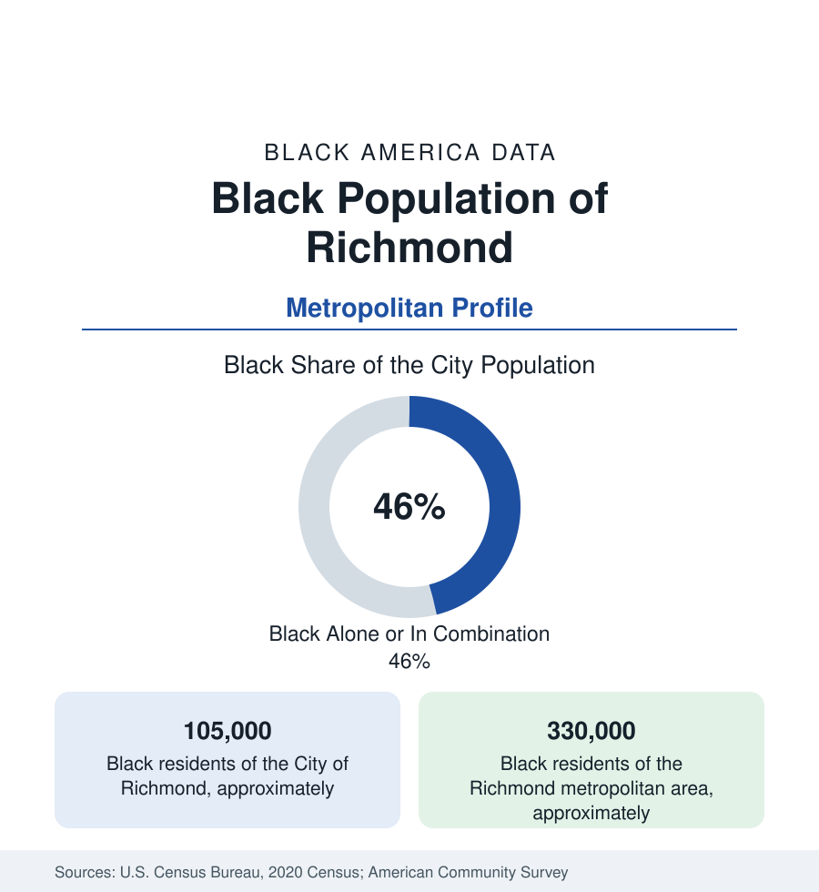

Black Cities
Black Richmond: Jackson Ward and the Capital's Second History
Richmond holds about 105,000 Black residents — nearly half the city — in a capital whose Black history runs from slavery's marketplace to Maggie Walker's bank. The census profile.

Richmond holds about 105,000 Black residents — Black alone or in combination, roughly 46 percent of Virginia's capital city — and about 330,000 across its metropolitan area, the third-largest Black population of any Southern capital region. Richmond's Black history is the deepest of any city in this section after New Orleans: a principal marketplace of the domestic slave trade, then, within a generation of emancipation, one of the most institutionally complete Black communities in America. This article profiles the population in the census data.
Jackson Ward: The Harlem of the South
Jackson Ward, the district northwest of downtown, was by 1900 among the most accomplished Black neighborhoods in the nation: a center of Black banking and insurance (the 'Black Wall Street of the South' of its boosters), home to the True Reformers' bank (the first Black-chartered bank in the United States, 1888) and to Maggie L. Walker, who in 1903 chartered the St. Luke Penny Savings Bank and became the first Black woman bank president in American history — her home on Leigh Street is now a national historic site. The Ward's theaters and churches, its newspaper (the Richmond Planet), and its professional class made it the institutional capital of Black Virginia. The modern district is a national historic landmark district in the two-speed pattern: preserved fabric, a museum and heritage economy, rising values, and a Black population share well below its historic near-totality, with the community's mass long since spread through the city's Northside and Southside and the counties beyond.
The Metro's Modern Geography
The capital region's 330,000 Black residents distribute across the independent city's ring in the Virginia pattern. Henrico County, the suburban giant to the north and west, holds a Black population in the range of 100,000 — roughly three-tenths of the county — from the older East End communities of Sandston and Highland Springs to the new subdivisions of the far East End, one of the largest suburban Black populations of any county in the South. Chesterfield County, to the south, holds a growing Black population in the range of 75,000 to 85,000 along the Route 1 and Midlothian corridors. Petersburg, the small industrial city 25 miles south, is roughly three-quarters Black — among the highest shares of any city in Virginia — and holds Virginia State University, the state's public land-grant HBCU; the city of Richmond itself holds Virginia Union University, the private HBCU on Lombardy Street. The capital's Black institutional density — two HBCUs within its metro, the state government, the medical college — is the profile's core asset.
Two Histories, One Dataset
Richmond's data carry a juxtaposition no other profile matches exactly. The same city that was the Confederacy's capital and the slave trade's second-greatest American marketplace became, within decades, a capital of Black finance whose institutions are this article's middle section — and in the modern era, a majority-Black-governed city whose Monument Avenue statues were removed in the current decade's civic decisions, an event the population's representatives enacted through its own institutions. The economic data run in the channels that history cut: a Black middle class rooted in state government (Richmond is a state capital, with the public-sector pattern), education, health care (the VCU medical center), and finance's back offices, alongside city poverty indicators that remain the region's most difficult.
Indicators and Change
The estimates show the metro's Black population growing steadily — Henrico and Chesterfield gaining fastest, Petersburg stable, the city itself growing in total with its Black share edging down from its late-century majority toward the mid-forties as downtown revival diversifies the core. Black median income in the metro runs mid-pack in the Southern set; homeownership in the suburban counties is the favorable layer; the city's schools and health tracts carry the concentrated indicators. The capital-region pattern — government-anchored stability, suburban growth, a historic core repricing — aligns Richmond with Raleigh and Columbia in the section's Southern-capital family, with a depth of Black institutional history none of them matches.
Reading the Richmond Numbers
Richmond is the profile where the history is the data's context in the most literal sense: the Ward that produced the nation's first Black woman bank president is a census district today, its population dispersed into the counties the same way every profile's founding neighborhood dispersed — except that here the founding neighborhood financed a people's freedom-era start. Quote the 330,000 with that provenance attached.
More in Black Cities
Black Atlanta: Population, Distribution, and Growth of a Black Metropolis
Metro Atlanta holds more than two million Black residents — roughly one in three, second only to New York. The suburban distribution, migration history, and composition of Black Atlanta in the census data.
Black New York: The Largest Black Population in America
The New York metropolitan area holds about 3.4 million Black residents — more than any metro in the nation — and the city itself about two million. The census profile.
Black Washington: The District and the Metro
The Washington metro holds about 1.6 million Black residents, and the District itself — long a majority-Black city — now records a Black share near 41 percent. The census profile.
Source: U.S. Census Bureau, 2020 Census; American Community Survey; Population Estimates Program.